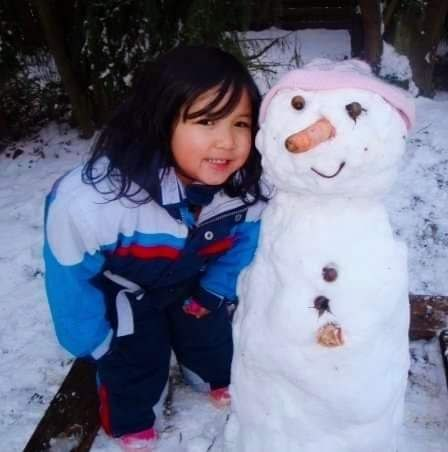

About Me
Welcome to my little corner of the internet!
Hi viewers, first of all let me introduce myself. My name is Nur Hanan Binti Azuhaizat. My friends love to call me nan, nuha and there are few of them like to call me nan cheese. No worries, I am fine with it...I guess.
I was born on 9 June 2006 at Kangar, Perlis. Perlis was my hometown on my dad side, I hope that's explain the reason why I was born there.
In 2007 until April 2010, me and my family move and stay at Frankfrut,German for 3 years. The reasons why we are moving there because of my mother's job during that time.

Me when I was 3 years old at German during winter season

My sisters and me with papa
My School Journey
Now, let's move to my life journey after returning to Malaysia. When I was 6 years old, me and my sisters are staying with my grandma at Yan, Kedah. I attended kindergarten at Tadika Kemas Kampung Kolam which are only 3 minutes away from my grandma house.
After that, in 2013, we moved to Precint 5,Putrajaya with my parents. By that time, I was 7 years old and need to go to primary school for Year 1. I start my Year 1 at Sekolah Kebangsaan Putrajaya Precint 18(1). You guys might wondering why I was schooling at Precint 18 instead of Precint 5, where I was staying. It is because in 2013, Precint 5 did not have any school nearby. Besides, Precint 18 was the most neareast school to my mom office. Move forward to 2019, when I was started my high school. At first, I was schooling at the SMKPP5(1). However, at the end of 2019 my family again moving to Precint 14. That is mean I also need to change my school right? So, I am moving to SMKPP 14(1), which are closer to our new house. Then, I continue my form 2 schooling until I finished my high school education on form 5.
My Education Background
| Year |
School / Institution |
Focus |
| 2013 - 2018 |
Sekolah Rendah Kebangsaan Putrajaya Presint 18(1) |
UPSR |
| 2019 - 2024 |
Sekolah Menengah Kebangsaan Putrajaya Presint 14(1) |
SPM (Business Management) |
| 2024 - Present |
Universiti Tekonologi Mara(UiTM), Sungai Petani Branch |
Diploma in Library Informatic |
Right now, I am currently pursuing my Diploma in Library Informatic at UiTM, Sungai Petani Kedah. You guys might think that I am a bookworm kind of person, sadly I am not. I am a type of person that will only read a book if I am in the mood of reading. If not, I did not even going to touch a reading book. After 4 semesters I have been involved with book and library, I find that this course actually bring me closer to a book. Now, I feel glad that I have the chances to be one of the students in Library Informatic courses which make me knowledgeable than before.
Best viewed in Chrome, 1920x1080 resolution. Last updated: May 2026.